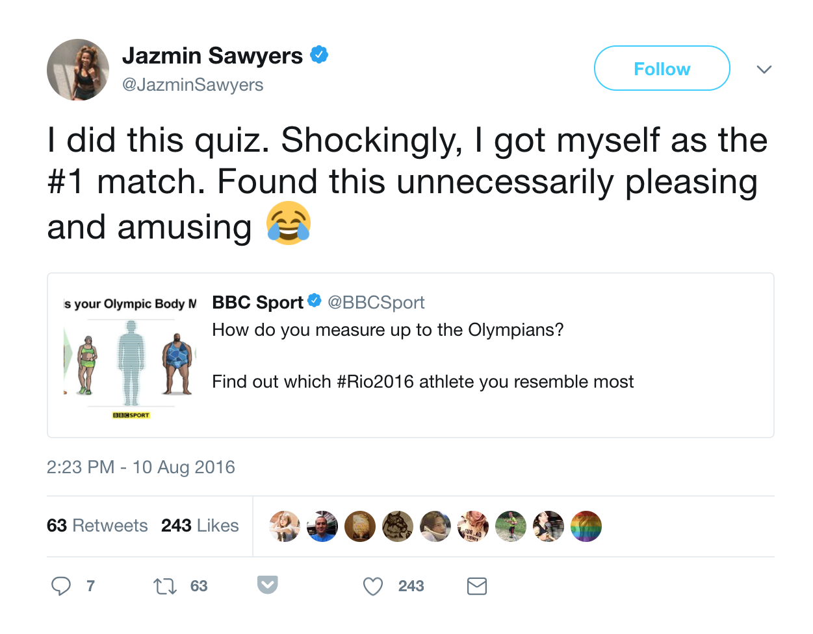

Why do data viz?
- If it can put the reader in the story
- If it makes the story clearer than words alone
- If it makes for more vivid story telling
Some examples...
- Putting the reader in the story: Budget calculator, election results, NHS tracker
- Making things clear: Supporting breaking news stories, long-running news stories, explaining large datasets
- Vivid story telling: Original stories & investigations, visual guides
Putting the reader in the story
Thankfully, it worked...

Working with large datasets: A detailed look at house prices
- Started off with more than 22 million rows of all property transactions in England and Wales
- Analysed 8.5 million property transactions over a 10-year period
- Carried out inflation-adjustment to find how house prices had changed at very detailed geographical levels
- Reproducible data analysis was key
- Added benefit is that the analysis can be re-run quickly when the data is updated
What tools do we use for data vis?
- Excel
- R
- Python
- QGIS
- Carto
- Tableau